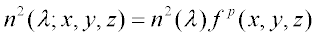

Nippon Sheet Glass markets a line of gradient index (GRIN) fibers under the trade name SELFOC®. These fibers have radial index gradients of the form:

where a is a constant specific to a given fiber type.
-
The GRIN function in ASAP is of the form:

-
Ignoring the λ dependence, you can equate the two gradient functions by setting ρ=2 and
You now have all of the information necessary to describe the fiber in ASAP.